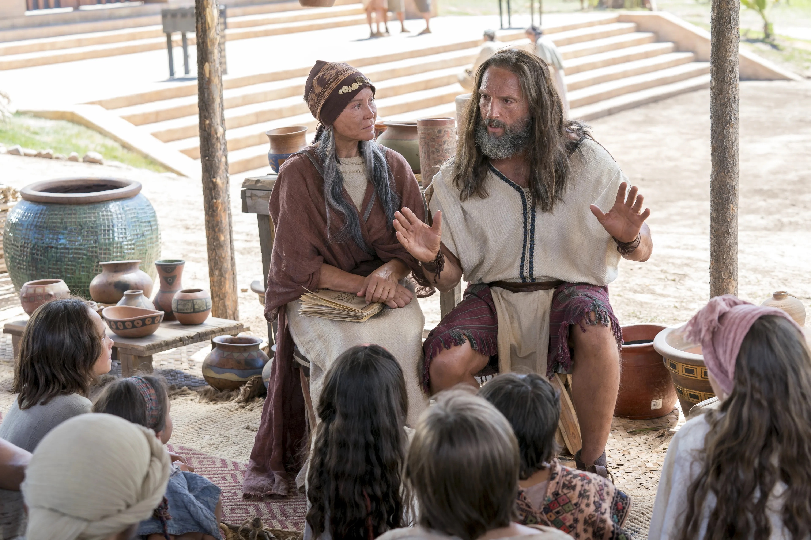

What is the Gift of the Holy Ghost?


The Gift of the Holy Ghost is a special blessing given after baptism. When we receive this gift, we can have the Holy Ghost as our constant companion if we strive to live righteously.
The Holy Ghost comforts us, teaches us truth, warns us of danger, and helps us feel God's love every day.
“For behold, again I say unto you that if ye will enter in by the way, and receive the Holy Ghost, it will show unto you all things what ye should do.”
As we listen to the promptings of the Holy Ghost, we can make good choices and draw closer to Jesus Christ.